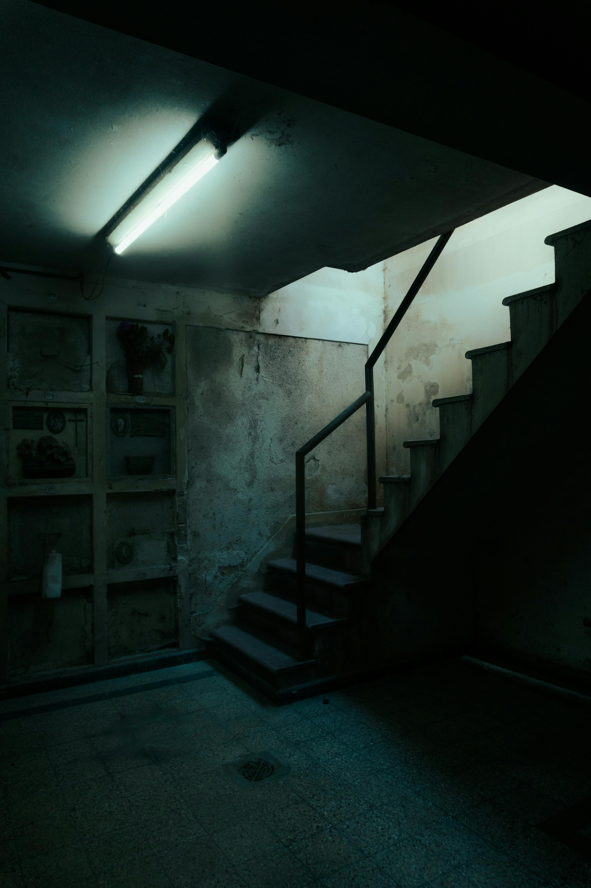
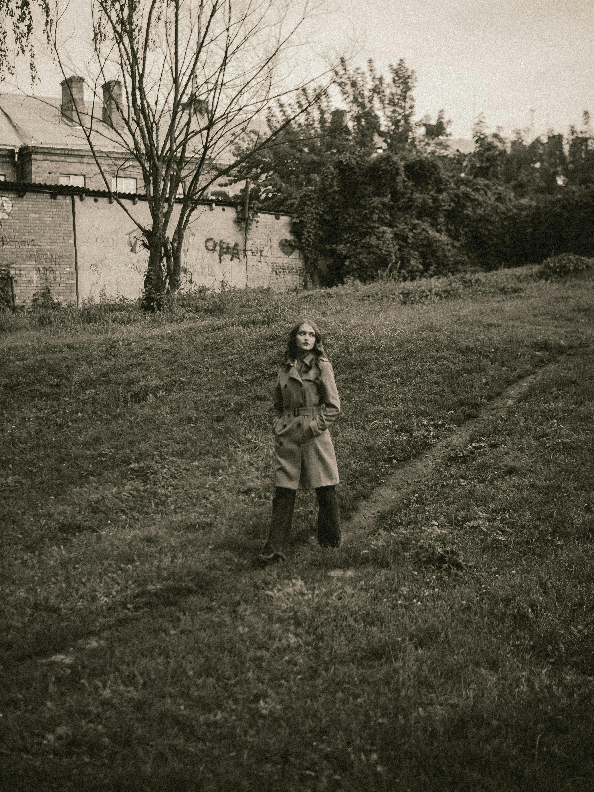
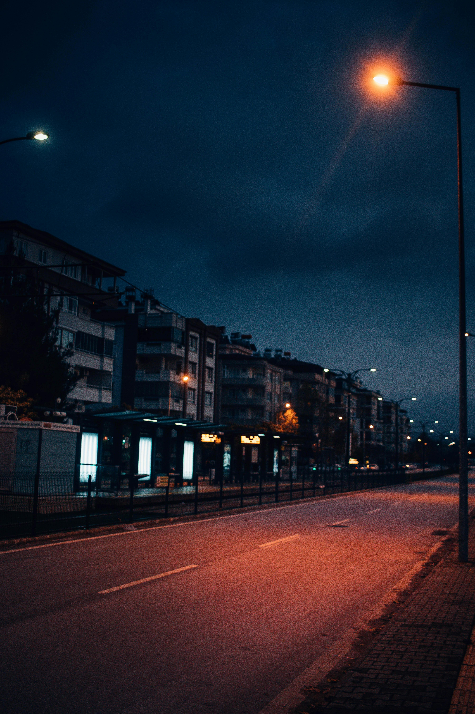

Dramat psychologiczny
Przez mgłę
Fragmentaryczna sekwencja mgły, potłuczonego szkła i odległych postaci buduje poczucie wewnętrznej dezorientacji. Ruch kamery odzwierciedla stan psychiczny, w którym zanika jasność, a obecność innych wydaje się odległa i niepokojąca, zamiast wspierająca.

Korytarz
Zbliżenia i symboliczne obrazy zastępują pewność narracji. Cienie, światło oraz wyizolowane detale ludzkiej obecności odzwierciedlają wewnętrzny konflikt, emocjonalną ekspozycję i momenty, w których percepcja staje się niestabilna oraz przytłaczająca.
Terminalna cisza
Twarz kobiety, jej oddech oraz ruch w przestrzeniach przejściowych ujawniają lęk, który nigdy w pełni nie wypływa na powierzchnię. Lotniska, okna, odbicia — wszystko sugeruje wyjazd, lecz żadnego powrotu nie obiecuje. Film uchwyca napięcie oczekiwania bez rozstrzygnięcia.
Bezpańskie
Psy pojawiają się nie jako symbole, lecz jako świadkowie — głodne, mokre, nieruchome. Ich cicha obecność przekazuje emocjonalne zaniedbanie i wytrwałość. Brak ludzkiej troski staje się główną siłą emocjonalną.

Długie popołudnie
Starsza kobieta przechodzi przez codzienne chwile, lecz każda czynność niesie ciężar czasu. Spojrzenie w okno, przewijanie telefonu, trzymanie książki — to nie nawyki, lecz punkty oparcia. Dramat tkwi w tym, co pamiętane, a nie w tym, co się wydarza.

Przed ciszą
Radość pojawia się na chwilę w ruchu i śmiechu, po czym zapada się w mrok i stratę. Nagła zmiana obrazu z życia w następstwa oddaje to, jak trauma bez ostrzeżenia przerywa rzeczywistość.

Gdy wszyscy odchodzą
Ludzkie interakcje wypełniają kadr, aż nagle znikają. Puste miasto nie jest opuszczone — jest wyczerpane. Pozostaje psychologiczne echo obecności, długo po tym, jak ludzie odeszli.
Nadal tutaj
Mężczyzna powtarza gesty bez celu. Dłonie pocierają się, ruch przyspiesza, po czym zatrzymuje. Rutyna nie daje stabilności — ujawnia niemożność ucieczki z własnej wewnętrznej pętli.